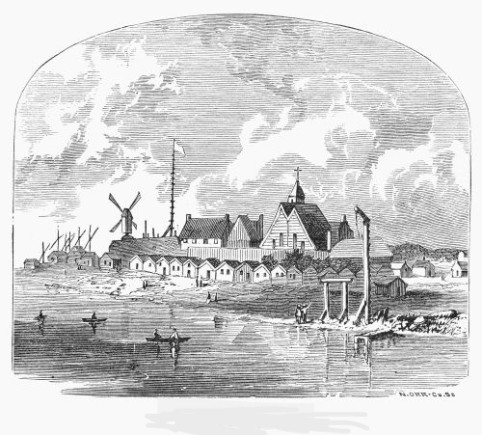
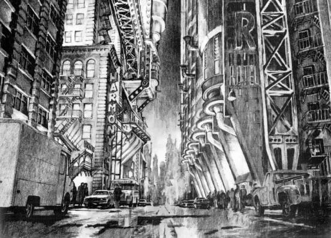

Portal Oficial de Identidad, Innovación e Historia
Historia e Identidad
Fundada en el siglo XVII, Ciudad Gótica comenzó como un pequeño asentamiento mercantil y evolucionó hasta convertirse en uno de los centros financieros e industriales más influyentes del país. Su identidad está profundamente ligada al acero, la arquitectura neogótica y la resiliencia de sus habitantes.
Según el canon establecido por el escritor Alan Moore, la ciudad fue fundada en 1635 por un mercenario llamado Jon Logerquist (o Jonatan Vale), paralelamente al desarrollo de la costa este. Durante el siglo XX, la familia Wayne impulsó la modernización de la metrópolis con la construcción de infraestructuras clave.
Evolución Histórica de la Metrópoli
1. Conquista Británica
En 1664, durante la disputa entre ingleses y holandeses, la costa de Gotham pasó a formar parte de los dominios de la Corona Británica. La historia temprana se conservó principalmente por vía oral a través de relatos de colonos y leyendas locales sobre los primeros asentamientos.

Asentamiento colonial en las costas de Gotham durante el siglo XVII.
2. Desarrollo Urbano del Siglo XIX
En el siglo XIX, el juez Solomon Wayne y el arquitecto Cyrus Pinkney impulsaron una ambiciosa reforma urbanística. Su objetivo era transformar la ciudad en un centro financiero monumental, caracterizado por sus icónicas fachadas neogóticas y gárgolas estructurales.

Trazado neogótico diseñado por Cyrus Pinkney y Solomon Wayne.
3. Era Moderna
La Era Moderna representa el contraste entre el crecimiento industrial y las complejas tensiones sociales. La metrópolis ha enfrentado eventos críticos como el terremoto Cataclysm, resurgiendo continuamente gracias a la fortaleza de sus instituciones y ciudadanos.
Vista contemporánea de los rascacielos y el centro financiero.
4. La Corte de los Búhos
Diversas leyendas urbanas señalan que, desde la época colonial, sociedades secretas y familias acaudaladas influyeron en el desarrollo arquitectónico y político de la ciudad operando tras bambalinas.
Representación folclórica de la sociedad secreta de Gotham.
Barrios y Zonas Principales
La metrópolis se divide en distritos con identidades bien marcadas:
Centro Financiero (Downtown): Corazón económico dominado por rascacielos y oficinas corporativas.
Isla Miagani: Zona turística e histórica conocida por sus teatros y museos.
The Narrows: Antiguo sector insular de calles estrechas y arquitectura centenaria.
Datos Clave de la Ciudad
Año de Fundación
1635
Población Ficticia
6.300.000 habitantes
Gentilicio
Goticano / Goticana
Clima Predominante
Templado húmedo, con niebla frecuente y precipitaciones moderadas
Fundador Histórico
Jonatan Vale (Colono europeo)
Sede Principal
Wayne Tower (Distrito Financiero)
Registros e Instituciones Destacadas
El Asilo Arkham
Fundado por Amadeus Arkham, este hospital de alta seguridad es una de las instituciones más antiguas de la región.
Departamento de Policía (GCPD)
Institución encargada de la protección ciudadana y el orden público en los distintos distritos.